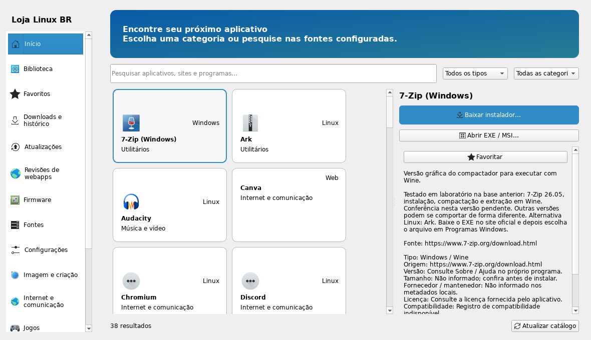

Abra Loja de aplicativos, procure pelo nome e abra a ficha. Confira a origem e o formato antes de instalar. Use Biblioteca para gerenciar o que já está instalado e Atualizações para conferir novas versões.
Para preparar várias instalações, abra a ficha de cada aplicativo, escolha Adicionar à fila de instalação… e selecione a origem. Use Revisar fila para conferir a seleção e começar as operações.
